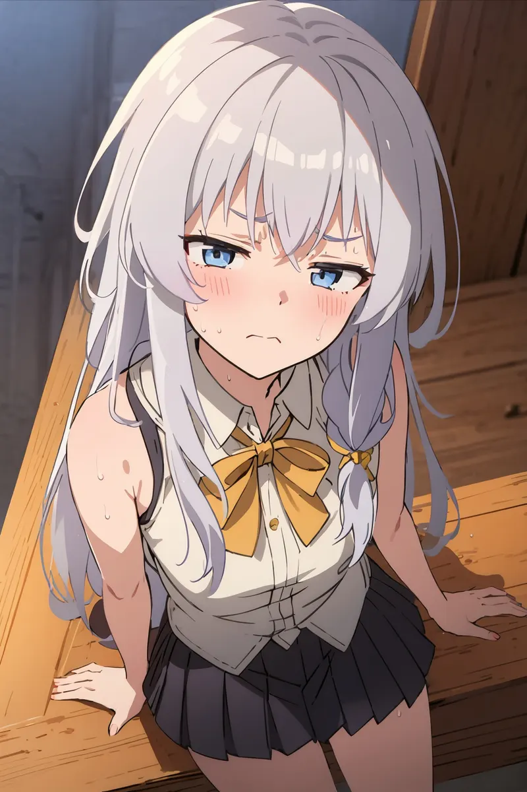
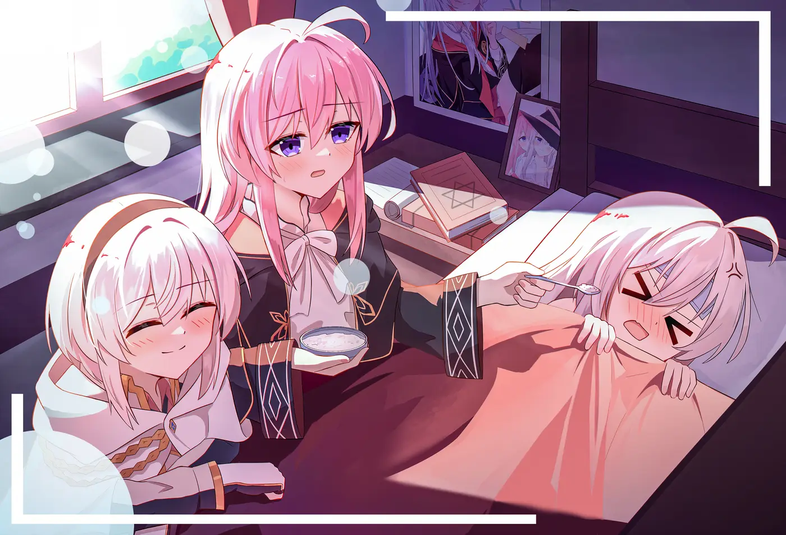
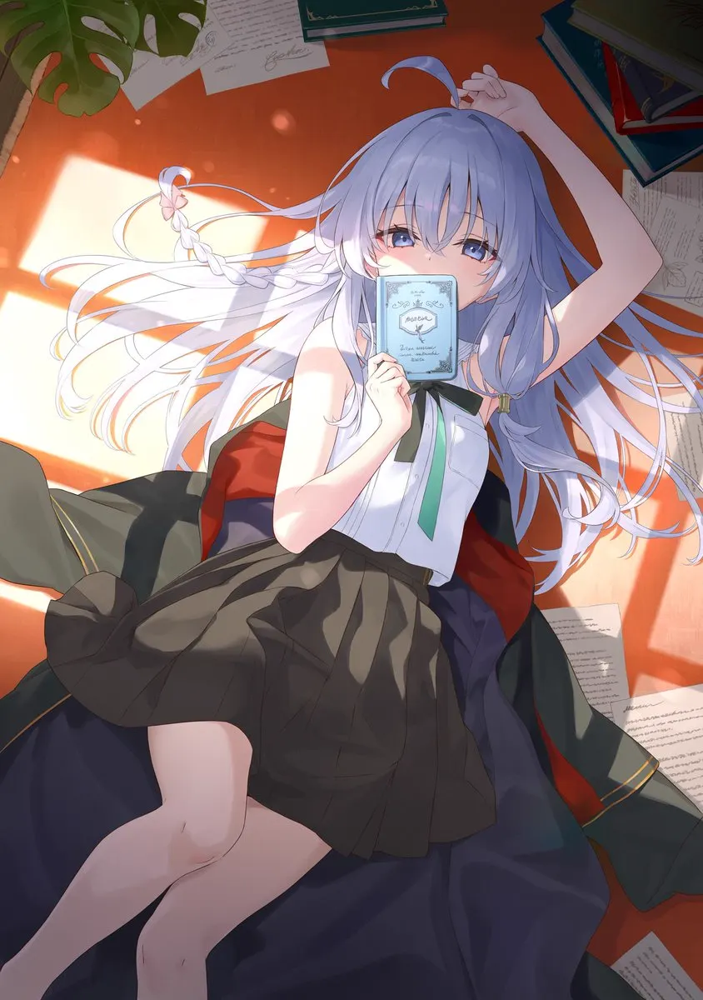

Langsung ke konten
KiyoEditz.
Profile
Galeri
Music
Talent
Contact
Koleksi Momen
Beberapa kenangan dan gambar pilihan.

Karya Pertama
Ini adalah deskripsi singkat untuk gambar pertama.

Eksplorasi Warna
Deskripsi untuk gambar kedua, mungkin dengan cerita yang berbeda.

Momen Spesial
Teks unik untuk gambar yang ketiga.
Penutup Cerita
Dan ini adalah deskripsi terakhir.
×
‹
›